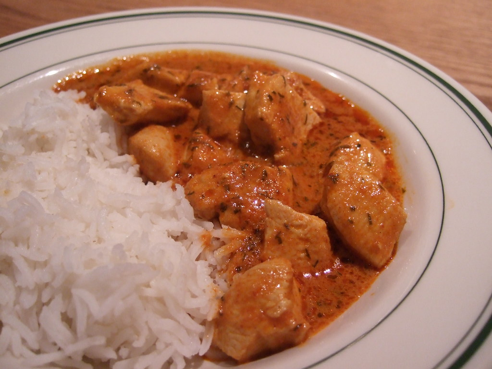

Chicken Tikka Masala

What is it?
Chicken Tikka Masala is a popular Indian dish featuring grilled marinated
chicken chunks (tikka) in a creamy, spiced tomato sauce. The sauce, rich
in flavor, is made with tomatoes, cream, and a blend of Indian spices.
It is typically served with rice or naan bread.
Ingredients
Chicken Tikka ingredients
- 500g boneless chicken breast
- 1 cup plain yogurt
- 1 tbsp lemon juice
- 2 tsp ground cumin
- 2 tsp paprika
- 1 tsp ground coriander
- 1 tsp turmeric
- 2 tsp garam masala
- 2 cloves garlic, minced
- 1 inch ginger, grated
Sauce ingredients
- 1 tbsp vegetable oil
- 1 medium onion, finely chopped
- 2 cloves garlic, minced
- 1 inch ginger, grated
- 1 tsp ground cumin
- 1 tsp paprika
- 1 tsp garam masala
- 1 can (400g) tomato puree
- 200ml heavy cream
- Salt to taste
- Fresh coriander for garnish
Chicken Tikka Recipe - Step by step
-
Cut the chicken into bite-sized pieces. In a bowl, mix yogurt, lemon juice, cumin, paprika, coriander, turmeric, garam masala, garlic, and ginger. Add the chicken and marinate for at least 1 hour.
-
Preheat the oven to 200°C (400°F). Thread the marinated chicken onto skewers and bake for 20-25 minutes, until cooked through. Set aside.
-
In a large pan, heat the vegetable oil over medium heat. Sauté the onions until golden brown.
-
Add the garlic, ginger, cumin, paprika, and garam masala to the pan, cooking for another minute until fragrant.
-
Stir in the tomato puree, bring to a boil, then reduce the heat and simmer for 10 minutes.
-
Add the cooked chicken to the sauce and stir well. Pour in the cream and simmer for an additional 10 minutes.
-
Garnish with fresh coriander and serve hot with rice or naan.
Sauce recipe - Step by step
-
In a large pan, heat the vegetable oil over medium heat. Sauté the onions until golden brown.
-
Add the garlic, ginger, cumin, paprika, and garam masala to the pan, cooking for another minute until fragrant.
-
Stir in the tomato puree, bring to a boil, then reduce the heat and simmer for 10 minutes.
-
Pour in the cream and simmer for an additional 10 minutes until the sauce thickens.
-
Add the cooked chicken to the sauce and stir well. Garnish with fresh coriander and serve hot.